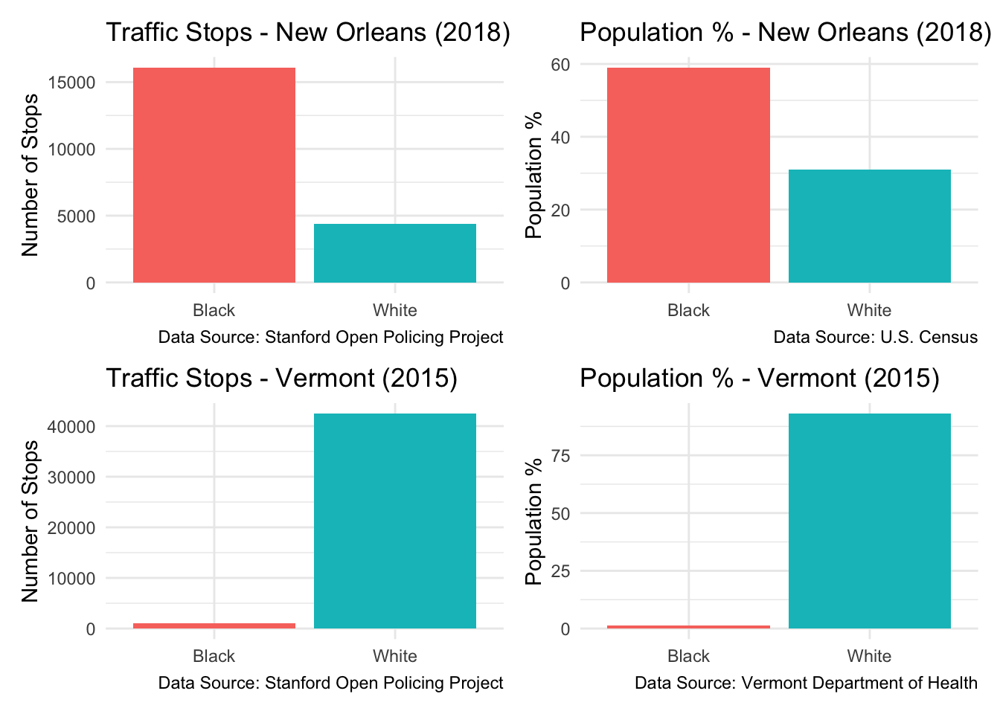
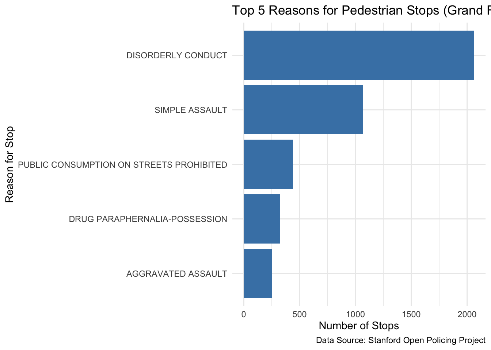
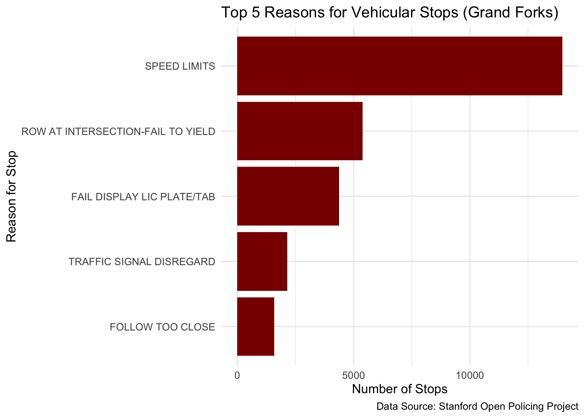

# Connect to the Stanford Open Policing Project database using environment variables
library(DBI)
con_traffic <- DBI::dbConnect(
RMariaDB::MariaDB(),
dbname = "traffic",
host = Sys.getenv("TRAFFIC_HOST"),
user = Sys.getenv("TRAFFIC_USER"),
password = Sys.getenv("TRAFFIC_PWD")
)Stanford Open Policing Project
This project uses SQL to analyze the Stanford Open Policing Project (SOPP) dataset, which contains traffic stop records from multiple U.S. states over several years. The goal is to explore the following questions:
- Do the total number of traffic stops differ by race?
- Do traffic stops vary over time?
- What are common reasons for vehicular and pedestrian stops?
Do the total number of traffic stops differ by race?
SELECT
subject_race,
COUNT(*) AS n_stops
FROM la_new_orleans_2020_04_01
WHERE type = 'vehicular'
AND subject_race IN ('White', 'Black')
AND STR_TO_DATE(CONCAT(SUBSTR(date, 1, 4), '-01-01'), '%Y-%m-%d') = '2018-01-01'
GROUP BY subject_race
ORDER BY n_stops DESC;| subject_race | n_stops |
|---|---|
| black | 16087 |
| white | 4389 |
To limit the scope of the data, I focused on vehicular stops in New Orleans in 2018 involving Black or White individuals. The results show that Black individuals were stopped nearly four times more often than White individuals. While approximately 60% of New Orleans’ population in 2018 was Black (compared to 30% White), this disparity still suggests a potential racial imbalance in stop rates.
What about a predominantly White state?
SELECT
subject_race,
COUNT(*) AS n_stops
FROM vt_statewide_2020_04_01
WHERE type = 'vehicular'
AND subject_race IN ('white', 'black')
AND STR_TO_DATE(CONCAT(SUBSTR(date, 1, 4), '-01-01'), '%Y-%m-%d') = '2015-01-01'
GROUP BY subject_race
ORDER BY n_stops DESC;| subject_race | n_stops |
|---|---|
| white | 42449 |
| black | 1081 |
New Orleans vs Vermont
# Load necessary libraries
library(tidyverse)
library(patchwork)
# Manually create a summary of stops and population demographics
data <- tibble(
area = c(rep("New Orleans 2018", 2), rep("Vermont 2015", 2)),
race = rep(c("Black", "White"), 2),
traffic_stops = c(16087, 4389, 1081, 42449),
population_percent = c(59, 31, 1.2, 93)
)
# Subsets for each area
nola_data <- data %>% filter(area == "New Orleans 2018")
vermont_data <- data %>% filter(area == "Vermont 2015")
# Create bar plots for traffic stops and population %
nola_stops_plot <- ggplot(nola_data, aes(x = race, y = traffic_stops, fill = race)) +
geom_bar(stat = "identity") +
labs(
title = "Traffic Stops - New Orleans (2018)",
y = "Number of Stops", x = NULL,
caption = "Data Source: Stanford Open Policing Project"
) +
theme_minimal() + theme(legend.position = "none")
nola_pop_plot <- ggplot(nola_data, aes(x = race, y = population_percent, fill = race)) +
geom_bar(stat = "identity") +
labs(
title = "Population % - New Orleans (2018)",
y = "Population %", x = NULL,
caption = "Data Source: U.S. Census"
) +
theme_minimal() + theme(legend.position = "none")
vt_stops_plot <- ggplot(vermont_data, aes(x = race, y = traffic_stops, fill = race)) +
geom_bar(stat = "identity") +
labs(
title = "Traffic Stops - Vermont (2015)",
y = "Number of Stops", x = NULL,
caption = "Data Source: Stanford Open Policing Project"
) +
theme_minimal() + theme(legend.position = "none")
vt_pop_plot <- ggplot(vermont_data, aes(x = race, y = population_percent, fill = race)) +
geom_bar(stat = "identity") +
labs(
title = "Population % - Vermont (2015)",
y = "Population %", x = NULL,
caption = "Data Source: Vermont Department of Health"
) +
theme_minimal() + theme(legend.position = "none")
# Combine plots
(nola_stops_plot | nola_pop_plot) / (vt_stops_plot | vt_pop_plot)
Figure: Traffic stops and population demographics in New Orleans and Vermont.
Alt text: Four bar plots comparing racial demographics and traffic stops in New Orleans (2018) and Vermont (2015).
In Vermont, where over 90% of the population is White (according to the Vermont Department of Health), the number of traffic stops reflects the demographic majority. Although a crude analysis, it suggests demographic patterns play a role in stop distribution. More rigorous statistical tests would be needed to investigate systemic bias.
Do traffic stops vary over time?
SELECT
SUBSTR(date, 1, 4) AS year,
COUNT(*) AS n_stops
FROM la_new_orleans_2020_04_01
WHERE type = 'vehicular'
AND STR_TO_DATE(CONCAT(vehicle_year, '-01-01'), '%Y-%m-%d') BETWEEN '2010-01-01' AND '2018-12-31'
GROUP BY year
ORDER BY year;| year | n_stops |
|---|---|
| 2010 | 550 |
| 2011 | 1983 |
| 2012 | 2407 |
| 2013 | 2311 |
| 2014 | 5764 |
| 2015 | 10238 |
| 2016 | 8931 |
| 2017 | 13515 |
| 2018 | 9184 |
This query returns annual traffic stop counts in New Orleans from 2010 to 2018. The data shows an upward trend in stops from 2010 to 2015. This may reflect increased vehicle ownership, population growth, or improved data collection systems.
What are common reasons for vehicular and pedestrian stops?
SELECT
type,
reason_for_stop,
COUNT(*) AS n_stops
FROM la_new_orleans_2020_04_01
WHERE type IN ('pedestrian', 'vehicular')
GROUP BY type, reason_for_stop
ORDER BY type, n_stops DESC;| type | reason_for_stop | n_stops |
|---|---|---|
| pedestrian | SUSPECT PERSON | 63829 |
| vehicular | TRAFFIC VIOLATION | 292318 |
| vehicular | SUSPECT VEHICLE | 6030 |
| vehicular | TRAFFIC VIOLATION|CALL FOR SERVICE | 2 |
| vehicular | CALL FOR SERVICE|TRAFFIC VIOLATION | 2 |
| vehicular | TRAFFIC VIOLATION|OTHER | 1 |
| vehicular | SUSPECT VEHICLE|SUSPECT PERSON|SUSPECT PERSON | 1 |
| vehicular | CRIMINAL VIOLATION|TRAFFIC VIOLATION | 1 |
| vehicular | TRAFFIC VIOLATION|OTHER|OTHER | 1 |
In New Orleans, “traffic violation” is the most cited reason for vehicular stops, while all pedestrian stops were classified under “suspect person.” Let’s see how this compares with data from Grand Forks, North Dakota.
SELECT
reason_for_stop,
COUNT(*) AS n_stops
FROM nd_grand_forks_2020_04_01
WHERE type = 'pedestrian'
GROUP BY reason_for_stop
ORDER BY n_stops DESC;| reason_for_stop | n_stops |
|---|---|
| DISORDERLY CONDUCT | 2063 |
| SIMPLE ASSAULT | 1066 |
| PUBLIC CONSUMPTION ON STREETS PROHIBITED | 441 |
| DRUG PARAPHERNALIA-POSSESSION | 323 |
| AGGRAVATED ASSAULT | 251 |
| CRIMINAL TRESPASS | 210 |
| CONTROLLED SUBSTANCE | 199 |
| POSSESSION MARIJUANA | 173 |
| TRESPASS ON PRIVATE PROPERTY | 159 |
| OPEN CONTAINER PROHIBITED | 155 |
SELECT
reason_for_stop,
COUNT(*) AS n_stops
FROM nd_grand_forks_2020_04_01
WHERE type = 'vehicular'
GROUP BY reason_for_stop
ORDER BY n_stops DESC;| reason_for_stop | n_stops |
|---|---|
| SPEED LIMITS | 13979 |
| ROW AT INTERSECTION-FAIL TO YIELD | 5376 |
| FAIL DISPLAY LIC PLATE/TAB | 4371 |
| TRAFFIC SIGNAL DISREGARD | 2142 |
| FOLLOW TOO CLOSE | 1584 |
| DUI | 1363 |
| FAIL TO HAVE VEH UNDER CONTROL | 1084 |
| SEAT BELTS TO BE WORN | 1066 |
| SEAT BELTS TO BE WORN|SPEED LIMITS | 711 |
| UNQUALIFIED OPERATOR | 634 |
Reasons for Stops in Grand Forks
library(tidyverse)
# Create top reason data for Grand Forks
pedestrian_df <- tibble(
reason = c(
"DISORDERLY CONDUCT",
"SIMPLE ASSAULT",
"PUBLIC CONSUMPTION ON STREETS PROHIBITED",
"DRUG PARAPHERNALIA-POSSESSION",
"AGGRAVATED ASSAULT"
),
n_stops = c(2063, 1066, 441, 323, 251)
)
vehicular_df <- tibble(
reason = c(
"SPEED LIMITS",
"ROW AT INTERSECTION-FAIL TO YIELD",
"FAIL DISPLAY LIC PLATE/TAB",
"TRAFFIC SIGNAL DISREGARD",
"FOLLOW TOO CLOSE"
),
n_stops = c(13979, 5376, 4371, 2142, 1584)
)
# Plot pedestrian reasons
pedestrian_plot <- ggplot(pedestrian_df, aes(x = reorder(reason, n_stops), y = n_stops)) +
geom_col(fill = "steelblue") +
coord_flip() +
labs(
title = "Top 5 Reasons for Pedestrian Stops (Grand Forks)",
x = "Reason for Stop",
y = "Number of Stops",
caption = "Data Source: Stanford Open Policing Project"
) +
theme_minimal()
# Plot vehicular reasons
vehicular_plot <- ggplot(vehicular_df, aes(x = reorder(reason, n_stops), y = n_stops)) +
geom_col(fill = "darkred") +
coord_flip() +
labs(
title = "Top 5 Reasons for Vehicular Stops (Grand Forks)",
x = "Reason for Stop",
y = "Number of Stops",
caption = "Data Source: Stanford Open Policing Project"
) +
theme_minimal()
pedestrian_plot
Reasons for Stops in Grand Forks
vehicular_plot
Figure: Top 5 reasons for pedestrian and vehicular stops in Grand Forks.
Alt text: Two bar charts showing leading causes of police stops for pedestrians and vehicles in Grand Forks, North Dakota.
In contrast to New Orleans, Grand Forks lists more specific categories like “Disorderly Conduct” for pedestrians and “Speed Limits” for vehicles. This likely reflects differences in data categorization across jurisdictions.
dbDisconnect(con_traffic, shutdown = TRUE)Conclusion
This exploratory analysis revealed that traffic stop counts often reflect local demographics but may still show racial disparities, especially in diverse cities like New Orleans. Additionally, the volume of stops has generally increased over time in certain regions, and the reasons for stops vary notably by region and stop type (vehicular vs pedestrian).
Who collected this data and why?
The Stanford Open Policing Project (SOPP) was launched by researchers at Stanford University, including Emma Pierson, Camelia Simoiu, and others. The project aimed to analyze racial disparities in policing by compiling and standardizing traffic stop data from across the United States. Their goal was to provide an empirical foundation for understanding how race may influence police behavior and to inform discussions on law enforcement practices and policy reform.
Citation
Pierson, Emma, Camelia Simoiu, Jan Overgoor, Sam Corbett-Davies, Daniel Jenson, Amy Shoemaker, Vignesh Ramachandran, et al. 2020. “A Large-Scale Analysis of Racial Disparities in Police Stops Across the United States.” Nature Human Behaviour, 1–10.